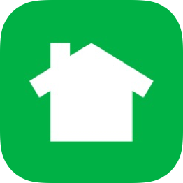
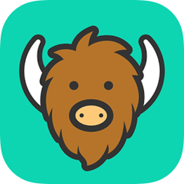

Colony is an app prototype that I designed with some development feedback from Nicholas Glenn, co-founder of Helpful Humans in Seattle. The app idea began as a pain point I personally experienced when going to a local event or exploring a new city.
If I wanted to host a block party for my neighbors who I don’t necessarily know, I may have to print physical flyers and stick them to their doors. If I was at an unfamiliar event or venue and had a question I would have to ask someone in person. Meanwhile plenty of digital layers allow us to connect with our “friends”.

Nextdoor
Pros
- Message your neighbors
- Supports commerce
- User authenticity
Cons
- Large barrier to entry
- Locked to one location
- Less support for general conversation
- No incentive to be active

Yik Yak
Pros
- Casual conversation around you
- Supported traveling
- Less focus on profiles
Cons
- Anonymity lead to cyber-bullying
- Voting system creates a popularity contest
- No birds eye view or map
- Bothers you to post with notifications
Twitter
Pros
- Easy conversations around a topic
- Location can be attached to a post
Cons
- Location support isn’t required
- Messages are tied to a username
Yik Yak’s ultimate failure became a point of study. I determined that much of their failure was due to the platform-centric popularity contest, the distraction of profiles, and the lack of targeting meaningful use-cases. These helped guide a few goals for the feature set of Colony.